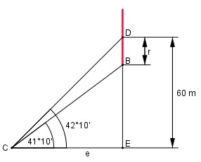

Aufgabe 126 Der Mittelpunkt des Zifferblattes einer Turmuhr befindet sich in einer Höhe von 60 m. Von einem Punkt am Boden aus erscheint er unter einem Erhebungswinkel von 42°10', der untere Rand des Zifferblattes unter einem Winkel von 41°10'. Wie groß ist der Durchmesser d des Zifferblattes?

Im Dreieck CED: 10 10’ = ----° = 0,1667 60 60 m tan 42,1667° = ------ |*e e e * tan 42,1667° = 60 m |:tan 42,1667° 60 m 60 m e = ---------------- = --------- = 66,2 m tan 42,1667° 0,9057 Im Dreieck CEB: 60 m - r tan 41,1667° = ---------- |*e e e * tan 41,1667° = 60 m – r |+r r + e * tan 41,1667° = 60 m |-e * tan 41,1667° r = 60 m – 66,2 m * tan 41,1667° = = 60 m – 66,2 m * 0,8744 r = 60 m – 57,9 m = 2,1 m d = 2 * r = 2 * 2,1 m = 4,2 m